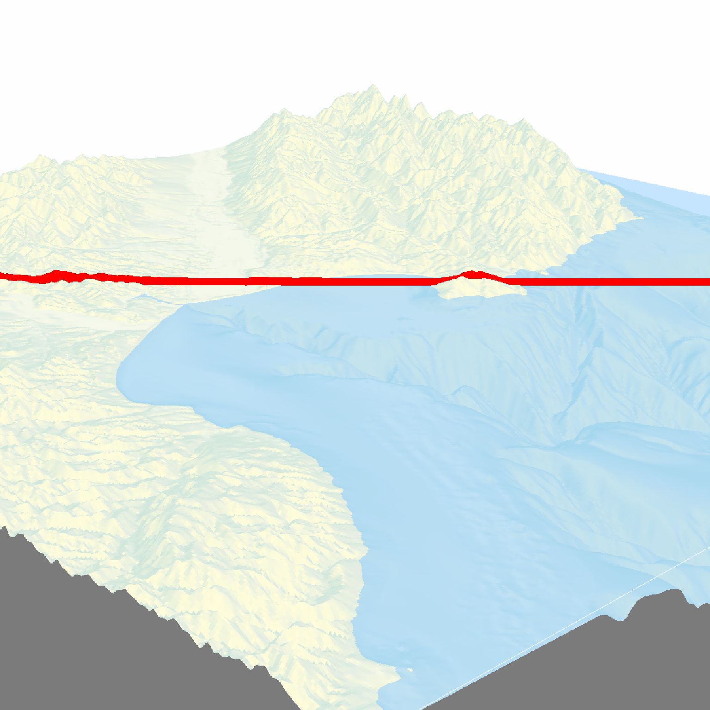
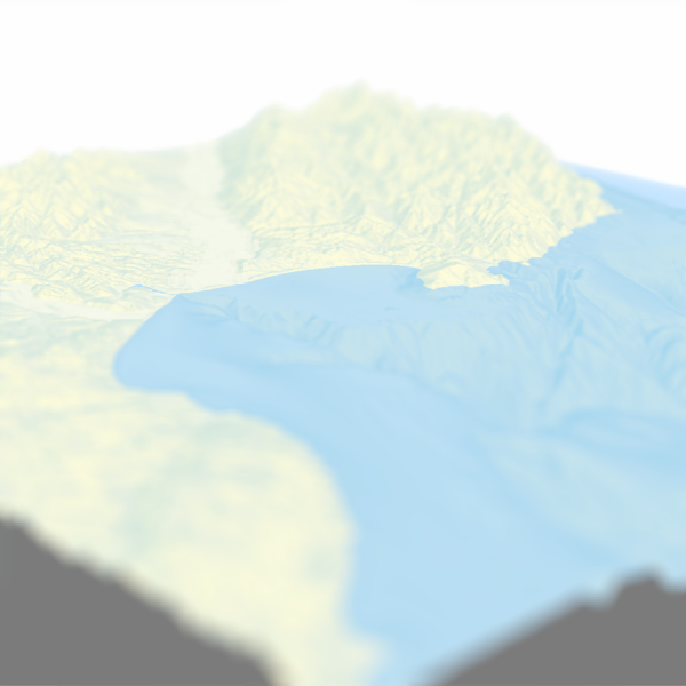

Adds depth of field to the current RGL scene by simulating a synthetic aperture.
The size of the circle of confusion is determined by the following formula (z_depth is from the image's depth map).
abs(z_depth-focus)*focal_length^2/(f_stop*z_depth*(focus - focal_length))
render_depth(
focus = NULL,
focallength = 100,
fstop = 4,
filename = NULL,
preview_focus = FALSE,
bokehshape = "circle",
bokehintensity = 1,
bokehlimit = 0.8,
rotation = 0,
gamma_correction = TRUE,
aberration = 0,
transparent_water = FALSE,
heightmap = NULL,
zscale = NULL,
title_text = NULL,
title_offset = c(20, 20),
title_color = "black",
title_size = 30,
title_font = "sans",
title_bar_color = NULL,
title_bar_alpha = 0.5,
title_position = "northwest",
image_overlay = NULL,
vignette = FALSE,
vignette_color = "black",
vignette_radius = 1.3,
progbar = interactive(),
software_render = FALSE,
width = NULL,
height = NULL,
camera_location = NULL,
camera_lookat = c(0, 0, 0),
background = "white",
text_angle = NULL,
text_size = 10,
text_offset = c(0, 0, 0),
point_radius = 0.5,
line_offset = 1e-07,
cache_scene = FALSE,
reset_scene_cache = FALSE,
print_scene_info = FALSE,
instant_capture = interactive(),
clear = FALSE,
bring_to_front = FALSE,
...
)Focal point. Defaults to the center of the bounding box. Depth in which to blur, in distance to the camera plane.
Default `1`. Focal length of the virtual camera.
Default `1`. F-stop of the virtual camera.
The filename of the image to be saved. If this is not given, the image will be plotted instead.
Default `FALSE`. If `TRUE`, a red line will be drawn across the image showing where the camera will be focused.
Default `circle`. Also built-in: `hex`. The shape of the bokeh.
Default `3`. Intensity of the bokeh when the pixel intensity is greater than `bokehlimit`.
Default `0.8`. Limit after which the bokeh intensity is increased by `bokehintensity`.
Default `0`. Number of degrees to rotate the hexagon bokeh shape.
Default `TRUE`. Controls gamma correction when adding colors. Default exponent of 2.2.
Default `0`. Adds chromatic aberration to the image. Maximum of `1`.
Default `FALSE`. If `TRUE`, depth is determined without water layer. User will have to re-render the water layer with `render_water()` if they want to recreate the water layer.
Default `NULL`. The height matrix for the scene. Passing this will allow `render_depth()` to automatically redraw the water layer if `transparent_water = TRUE`.
Default `NULL`. The zscale value for the heightmap. Passing this will allow `render_depth()` to automatically redraw the water layer if `transparent_water = TRUE`.
Default `NULL`. Text. Adds a title to the image, using magick::image_annotate.
Default `c(20,20)`. Distance from the top-left (default, `gravity` direction in image_annotate) corner to offset the title.
Default `black`. Font color.
Default `30`. Font size in pixels.
Default `sans`. String with font family such as "sans", "mono", "serif", "Times", "Helvetica", "Trebuchet", "Georgia", "Palatino" or "Comic Sans".
Default `NULL`. If a color, this will create a colored bar under the title.
Default `0.5`. Transparency of the title bar.
Default `northwest`. Position of the title.
Default `NULL`. Either a string indicating the location of a png image to overlay over the image (transparency included), or a 4-layer RGBA array. This image will be resized to the dimension of the image if it does not match exactly.
Default `FALSE`. If `TRUE` or numeric, a camera vignetting effect will be added to the image. `1` is the darkest vignetting, while `0` is no vignetting. If vignette is a length-2 vector, the second entry will control the blurriness of the vignette effect.
Default `"black"`. Color of the vignette.
Default `1.3`. Radius of the vignette, as a porportion of the image dimensions.
Default `TRUE` if in an interactive session. Displays a progress bar.
Default `FALSE`. If `TRUE`, rayshader will use the rayvertex package to render the snapshot, which is not constrained by the screen size or requires OpenGL.
Default `NULL`. Optional argument to pass to `rgl::snapshot3d()` to specify the width when `software_render = TRUE`..
Default `NULL`. Optional argument to pass to `rgl::snapshot3d()` to specify the height when `software_render = TRUE`.
Default `NULL`. Custom position of the camera. The `FOV`, `width`, and `height` arguments will still be derived from the rgl window.
Default `NULL`. Custom point at which the camera is directed. The `FOV`, `width`, and `height` arguments will still be derived from the rgl window.
Default `"white"`. Background color when `software_render = TRUE`.
Default `NULL`, which forces the text always to face the camera. If a single angle (degrees), will specify the absolute angle all the labels are facing. If three angles, this will specify all three orientations (relative to the x,y, and z axes) of the text labels.
Default `10`. Height of the text.
Default `c(0,0,0)`. Offset to be applied to all text labels.
Default `0.5`. Radius of 3D points (rendered with `render_points()`.
Default `1e-7`. Small number indicating the offset in the scene to apply to lines if using software rendering. Increase this if your lines aren't showing up, or decrease it if lines are appearing through solid objects.
Default `FALSE`. Whether to cache the current scene to memory so it does not have to be converted to a `raymesh` object each time `render_snapshot()` is called. If `TRUE` and a scene has been cached, it will be used when rendering.
Default `FALSE`. Resets the scene cache before rendering.
Default `FALSE`. If `TRUE`, it will print the position and lookat point of the camera.
Default `TRUE` if interactive, `FALSE` otherwise. If `FALSE`, a slight delay is added before taking the snapshot. This can help stop prevent rendering issues when running scripts.
Default `FALSE`. If `TRUE`, the current `rgl` device will be cleared.
Default `FALSE`. Whether to bring the window to the front when rendering the snapshot.
Additional parameters to pass to `rayvertex::rasterize_scene()`.
4-layer RGBA array.
if(run_documentation()) {
montereybay %>%
sphere_shade() %>%
plot_3d(montereybay,zscale=50, water=TRUE, waterlinecolor="white",
zoom=0.3,theta=-135,fov=70, phi=20)
#Preview where the focal plane lies
render_depth(preview_focus=TRUE)
}
#> Focus distance: 804.968
#> Focal range: 445.34-1729.39

if(run_documentation()) {
#Render the depth of field effect
render_depth(focallength = 300)
}
#> Focus distance: 804.968
#> Error: Not a matrix.
if(run_documentation()) {
#Add a chromatic aberration effect
render_depth(focallength = 300, aberration = 0.3)
}
#> Focus distance: 804.968
#> Error: Not a matrix.
if(run_documentation()) {
#Render the depth of field effect, ignoring water and re-drawing the waterlayer
render_depth(preview_focus=TRUE,
heightmap = montereybay, zscale=50, focallength=300, transparent_water=TRUE)
render_depth(heightmap = montereybay, zscale=50, focallength=300, transparent_water=TRUE)
render_camera(theta=45,zoom=0.15,phi=20)
}
#> Focus distance: 804.968
#> Focus point (804.968) not in focal range: 0.182576-1
#> Focus distance: 804.968

if(run_documentation()) {
#Change the bokeh shape and intensity
render_depth(focus=900, bokehshape = "circle",focallength=500,bokehintensity=30,
title_text = "Circular Bokeh", title_size = 30, title_color = "white",
title_bar_color = "black")
render_depth(focus=900, bokehshape = "hex",focallength=500,bokehintensity=30,
title_text = "Hexagonal Bokeh", title_size = 30, title_color = "white",
title_bar_color = "black")
}
#> Error: Not a matrix.
if(run_documentation()) {
#Add a title and vignette effect.
render_camera(theta=0,zoom=0.7,phi=30)
render_depth(focallength = 250, title_text = "Monterey Bay, CA",
title_size = 20, title_color = "white", title_bar_color = "black", vignette = TRUE)
}
#> Focus distance: 804.968
#> Error: Not a matrix.